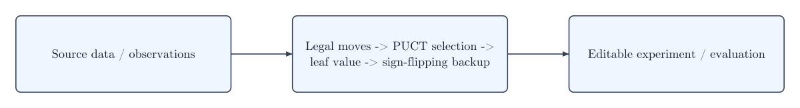
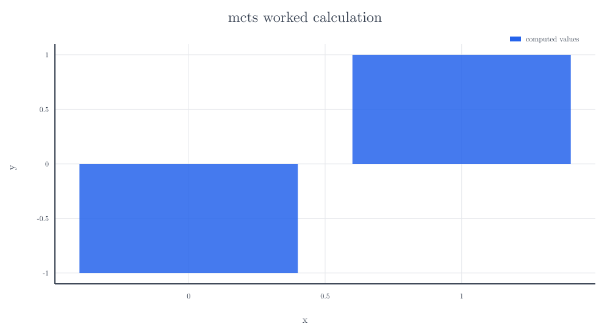
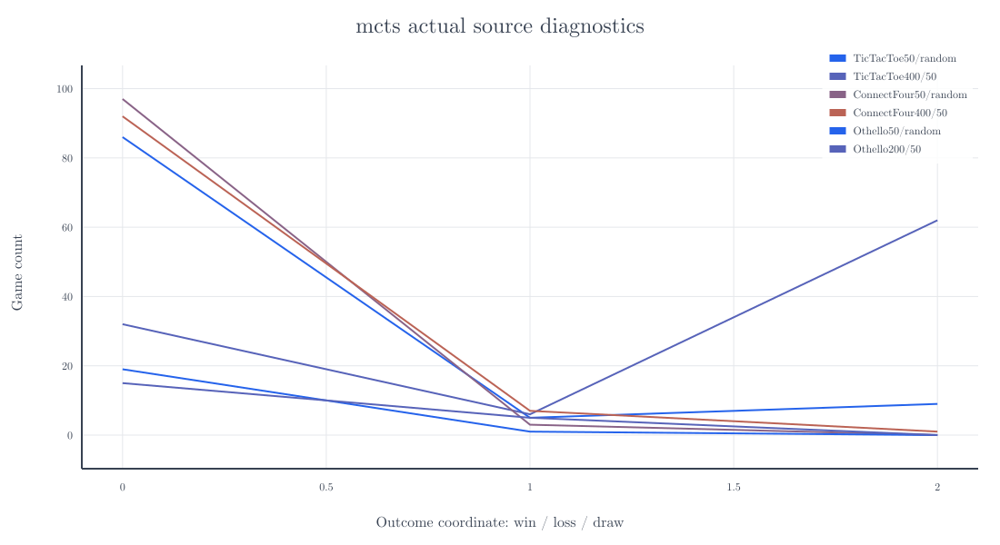
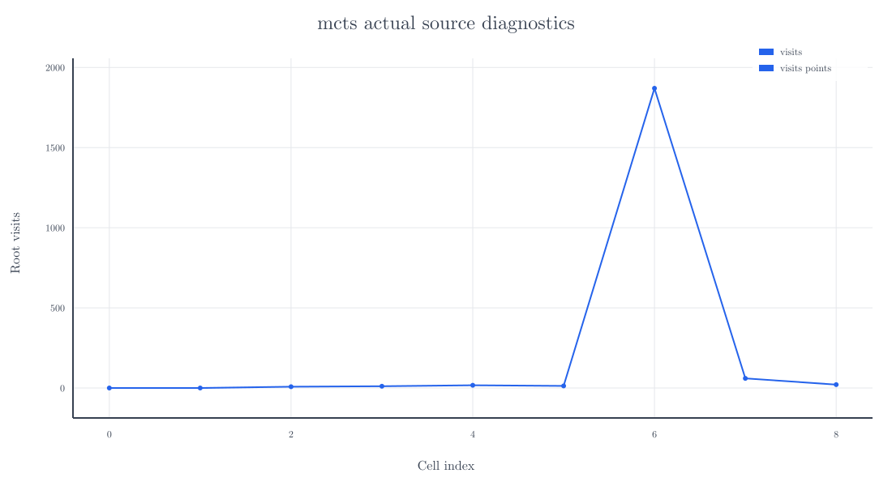

Monte Carlo Tree Search: Cloned Games, PUCT and Sign-Flipping Backup
Abstract
Canonical native graphs and owning search/data objects support a complete editable source experiment. Original seeds, parameter names, actual default budgets, objectives and random streams are retained. Fitting, self-play, episode collection and planning schedules remain visible.
Follow the model and data
Legal moves -> PUCT selection -> leaf value -> sign-flipping backup.
#include <dm/dm.hpp>
int main(){std::filesystem::create_directories("build");dm::graphics::Diagram d(29,1200);dm::graphics::DiagramNodeStyle s;s.width=14;s.height=5;s.font_size=23;d.node("input",{-18,0},"Source data / observations",s).node("graph",{0,0},"Legal moves -> PUCT selection -> leaf value -> sign-flipping backup",s).node("loop",{18,0},"Editable experiment / evaluation",s).edge("input","graph").edge("graph","loop").save_svg("build/mcts_method.svg");}
A hand-checkable calculation
After X wins on0,1,2, the terminal player-to-move value is-1. Backing up one ply flips it to+1 for the winning mover. The source calls this UCT in its stdout; its implemented exploration rule is prior-weighted PUCT.
#include <dm/dm.hpp>
int main(){std::filesystem::create_directories("build");dm::rl::environments::TicTacToe g;for(int a:{0,3,1,4,2})g.Apply(a);std::vector<double>values{dm::rl::planning::TerminalValue(g),-dm::rl::planning::TerminalValue(g)};std::print("| coordinate | computed value |\n|---:|---:|\n");for(size_t i=0;i<values.size();++i)std::print("| {} | {:.9f} |\n",i,values[i]);std::vector<double>x(values.size());std::iota(x.begin(),x.end(),0.);double low=std::min(0.,*std::min_element(values.begin(),values.end())),high=std::max(0.,*std::max_element(values.begin(),values.end())),span=std::max(1.,high-low);dm::graphics::RPlot::create().bars(x,values,"computed values",{37,99,235}).ylim(low-.05*span,high+.05*span).title("mcts worked calculation").size(1000,550).save_svg("build/mcts_worked.svg");}| coordinate | computed value |
|---|---|
| 0 | -1.000000000 |
| 1 | 1.000000000 |

Complete preserved source experiment
The original default protocol below is retained, including existing bounded-mode limits and deferred quality assertions where present. AlphaZero retains25 iterations of20 self-play games and60 updates per iteration. World Models retains300 random episodes,2000 VAE steps,1500 recurrent steps and60 generations with24 candidates. DATAMUNGE_EXAMPLES_FULL=1 restores full budgets only where the original helper uses that flag. No external-framework parity is asserted. Capture hooks read existing histories and final parameters without additional random draws or evaluation calls.
#include <dm/dm.hpp>
namespace report_capture {
inline dm::nn::NamedTensors arrays;inline std::map<std::string,std::vector<double>> traces;
inline void Trace(const std::string&name,double value){traces[name].push_back(value);}inline int monitor_index=0,checkpoint_index=0;
template<class T>void Save(const std::string& name,const std::vector<T>&v){arrays.push_back({name,dm::nn::from_vector(v)});}
struct Checkpoint{dm::nn::ParameterStore& store;~Checkpoint(){auto tag=std::to_string(checkpoint_index++);for(const auto& name:store.names())arrays.push_back({"parameters_"+tag+"_"+name,store.at(name).detach().clone()});}};
struct Flush{~Flush(){for(const auto&[name,values]:traces)Save(name,values);if(!arrays.empty()){std::filesystem::create_directories("build");dm::nn::save_npz("build/mcts_source.npz",arrays);}}};inline Flush flush;
}
// CMD: just run-nn mcts
// Monte Carlo tree search (MCTS) on board games.
//
// Port of tflow's mcts (TF-free: the search, the games and the RNG stream are
// the same code, so the numbers match tflow exactly).
// UCT: repeatedly (1) walk down the tree picking the child with the best
// upper-confidence score, (2) expand a leaf, (3) estimate its value with a
// random playout, (4) back the result up, negating it at each ply. The
// shared implementation is common/rl/mcts.hpp (copied from tflow); with a
// network evaluator instead of random playouts it becomes the search inside
// AlphaZero.
//
// Record the three seeded matches from the moves chosen by MCTS.
// Editable workflow support: checks.hpp
// Small runtime checks used by the executable nn examples. They stay on in
// Release builds and make the example exit nonzero on failure, so `just
// run-all-nn` doubles as a regression test against the recorded TF numbers.
// Editable workflow support: runtime.hpp
// Bounded demonstrations by default; opt into convergence experiments explicitly.
namespace example_runtime {
inline bool Full() {
const char* value = std::getenv("DATAMUNGE_EXAMPLES_FULL");
return value && std::string(value) == "1";
}
template <typename T> T Limit(T requested, T quick_limit) {
return Full() ? requested : std::min(requested, quick_limit);
}
inline void Describe() {
if (!Full())
std::cout << "Quick demonstration: bounded training; convergence metrics require "
"DATAMUNGE_EXAMPLES_FULL=1.\n";
}
} // namespace example_runtime
namespace check {
inline void Require(bool condition, const std::string& message) {
if (!condition) throw std::runtime_error(message);
}
// A short demonstration checks execution, derivatives and persistence; reaching
// a published accuracy/return requires the separately requested full schedule.
inline void TrainingQuality(bool condition, const std::string& message) {
if (example_runtime::Full()) Require(condition, message);
else std::cout << " full-training quality check deferred: " << message << '\n';
}
inline void Near(double actual, double expected, double tolerance, const std::string& message) {
if (!std::isfinite(actual) || !std::isfinite(expected) || std::abs(actual - expected) > tolerance)
throw std::runtime_error(message + ": got " + std::to_string(actual) + ", expected " + std::to_string(expected));
}
/// Expects `f` to throw; returns the message.
template <typename F>
std::string Throws(F&& f, const std::string& message) {
try {
f();
} catch (const std::exception& e) {
return e.what();
}
throw std::runtime_error(message + ": expected an exception");
}
} // namespace check
inline void Header(const std::string& title) {
const std::size_t pad = title.size() < 60 ? 60 - title.size() : 0;
std::cout << "\n== " << title << " " << std::string(pad, '=') << "\n";
}
// Editable workflow support: rl/board_games.hpp
namespace rl {
using datamunge::rl::environments::Game;
using datamunge::rl::environments::GridGame;
using datamunge::rl::environments::TicTacToe;
using datamunge::rl::environments::ConnectFour;
using datamunge::rl::environments::Othello;
}
// Editable workflow support: rl/mcts.hpp
namespace rl {using dm::rl::planning::Evaluation;using dm::rl::planning::Evaluator;using dm::rl::planning::TerminalValue;using dm::rl::planning::RolloutEvaluator;using dm::rl::planning::Mcts;}
namespace {
// Plays `games` games; player 1 uses `sims1` simulations, player 2 `sims2`
// (0 = random moves). Returns (wins1, wins2, draws).
std::array<int, 3> Match(rl::Game& game, int sims1, int sims2, int games, std::mt19937_64& rng) {
rl::Mcts mcts(rl::RolloutEvaluator(&rng));
std::array<int, 3> tally{0, 0, 0};
for (int g = 0; g < games; ++g) {
game.Reset();
// Alternate who starts so neither side gets the first-move advantage.
const bool swap = g % 2 == 1;
while (!game.Terminal()) {
const int sims = (game.CurrentPlayer() == 1) != swap ? sims1 : sims2;
std::vector<int> legal = game.LegalActions();
int action = legal[rng() % legal.size()];
if (sims > 0) {
std::vector<int> counts = mcts.Search(game, sims, rng);
action = static_cast<int>(std::max_element(counts.begin(), counts.end()) - counts.begin());
}
game.Apply(action);
}
const int w = game.Winner();
if (w == 0) tally[2]++;
else if ((w == 1) != swap) tally[0]++;
else tally[1]++;
}
static int index=0;report_capture::Save("matches_"+std::to_string(index++),std::vector<int>(tally.begin(),tally.end()));return tally;
}
} // namespace
int main() {
try {
std::mt19937_64 rng(0);
std::printf("== MCTS with random playouts (UCT), 100 games per pairing, first move alternates\n");
std::printf(" %-12s %-22s %6s %6s %6s\n", "game", "matchup", "win", "loss", "draw");
rl::TicTacToe ttt;
rl::ConnectFour c4;
rl::Othello oth;
struct Pair {
const char* label;
int sims1, sims2;
};
for (rl::Game* game : std::vector<rl::Game*>{&ttt, &c4, &oth}) {
const int big = game->name() == "Othello" ? 200 : 400;
for (Pair p : {Pair{"MCTS(50) vs random", 50, 0}, Pair{"MCTS(big) vs MCTS(50)", big, 50}}) {
const int games = game->name() == "Othello" ? 20 : 100;
std::array<int, 3> t = Match(*game, p.sims1, p.sims2, games, rng);
std::printf(" %-12s %-22s %6d %6d %6d (%d games)\n", game->name().c_str(), p.label, t[0], t[1], t[2], games);
// The stronger side must come out ahead (it never loses more than it wins).
check::Require(t[0] >= t[1], game->name() + " " + p.label + ": the stronger player wins at least as often as it loses");
if (p.sims2 == 0 && game->name() != "TicTacToe")
check::Require(t[0] >= games * 3 / 4, game->name() + ": MCTS(50) beats a random player in >= 75% of games");
if (p.sims2 == 0 && game->name() == "TicTacToe")
check::Require(t[1] <= games / 10, "TicTacToe: MCTS(50) rarely loses to a random player");
}
}
std::printf("\n-- Visit counts from the root: 2000 simulations on a tic-tac-toe position\n");
ttt.Reset();
ttt.Apply(0); // X corner
ttt.Apply(1); // O next to it (a mistake)
std::cout << ttt.Render();
rl::Mcts mcts(rl::RolloutEvaluator(&rng));
std::vector<int> counts = mcts.Search(ttt, 2000, rng);
report_capture::Save("visits",counts);
std::printf(" X to move; visits per cell:\n");
for (int r = 0; r < 3; ++r) {
std::printf(" ");
for (int c = 0; c < 3; ++c) std::printf(" %5d", counts[r * 3 + c]);
std::printf("\n");
}
std::printf(" (cell 4, the centre, or cell 2/6 should dominate: they start a double threat)\n");
{
int total = 0;
for (int c : counts) total += c;
check::Require(total == 2000 && counts[0] == 0 && counts[1] == 0, "visits sum to the simulations, occupied cells get none");
// X wins by force with 3, 4 or 6 (each makes a threat whose block lets X fork).
const int best = static_cast<int>(std::max_element(counts.begin(), counts.end()) - counts.begin());
check::Require(best == 3 || best == 4 || best == 6, "the most visited move is a winning one (3, 4 or 6)");
check::Require(mcts.last_root_value() > 0.5f, "the root value shows X is winning");
}
std::printf("\n-- MCTS game replays\n");
auto film = [&](rl::GridGame& game, int sims1, int sims2, const std::string& name) {
game.Reset();
const auto initial = game.Clone();
std::vector<int> moves;
while (!game.Terminal()) {
const int sims = game.CurrentPlayer() == 1 ? sims1 : sims2;
std::vector<int> c = mcts.Search(game, sims, rng);
const int move = static_cast<int>(std::max_element(c.begin(), c.end()) - c.begin());
moves.push_back(move);
game.Apply(move);
}
std::filesystem::create_directories("build");
std::filesystem::create_directories("figures");
dm::rl::environments::save_board_replay(dynamic_cast<const rl::GridGame&>(*initial),
moves, "build/" + name + ".mp4");
std::filesystem::copy_file("build/" + name + ".mp4", "figures/" + name + ".mp4",
std::filesystem::copy_options::overwrite_existing);
report_capture::Save(name + "_moves", moves);
const std::string outcome = game.Winner() ? "player " + std::to_string(game.Winner()) + " wins" : "draw";
std::printf(" %s: %s\n", name.c_str(), outcome.c_str());
return game.Winner();
};
const int w_ttt = film(ttt, 400, 400, "mcts_tic_tac_toe_400_vs_400");
film(c4, 400, 50, "mcts_connect_four_400_vs_50");
film(oth, 200, 50, "mcts_othello_200_vs_50");
check::Require(w_ttt == 0, "MCTS(400) vs MCTS(400) tic-tac-toe is a draw");
std::printf("\nchecks passed\n");
} catch (const std::exception& e) {
std::fprintf(stderr, "CHECK FAILED: %s\n", e.what());
return 1;
}
return 0;
}
== MCTS with random playouts (UCT), 100 games per pairing, first move alternates
game matchup win loss draw
TicTacToe MCTS(50) vs random 86 5 9 (100 games)
TicTacToe MCTS(big) vs MCTS(50) 32 6 62 (100 games)
ConnectFour MCTS(50) vs random 97 3 0 (100 games)
ConnectFour MCTS(big) vs MCTS(50) 92 7 1 (100 games)
Othello MCTS(50) vs random 19 1 0 (20 games)
Othello MCTS(big) vs MCTS(50) 15 5 0 (20 games)
-- Visit counts from the root: 2000 simulations on a tic-tac-toe position
X O .
. . .
. . .
X to move; visits per cell:
0 0 8
11 17 13
1870 60 21
(cell 4, the centre, or cell 2/6 should dominate: they start a double threat)
-- MCTS game replays
mcts_tic_tac_toe_400_vs_400: draw
mcts_connect_four_400_vs_50: player 1 wins
mcts_othello_200_vs_50: player 1 wins
checks passedActual source performance
These measurements come from the complete source run above; each series retains source execution order. A bounded run or one evaluation point does not establish convergence. Model loss and task return use separate figures.
#include <dm/dm.hpp>
int main(){auto archive=dm::nn::load_npz("build/mcts_source.npz");auto plot=dm::graphics::RPlot::create();int series=0;for(const auto&[key,t]:archive){if(!key.starts_with("matches_"))continue;auto y=t.to_vector<double>();std::vector<double>x(y.size());std::iota(x.begin(),x.end(),0.);std::vector<std::string>labels{"TicTacToe50/random","TicTacToe400/50","ConnectFour50/random","ConnectFour400/50","Othello50/random","Othello200/50"};plot.lines(x,y,labels.at(series),{37+(series%4)*50,99,235-(series%4)*50});++series;}if(!series)throw std::runtime_error("source diagnostic missing");plot.title("mcts actual source diagnostics").x_label("Outcome coordinate: win / loss / draw").y_label("Game count").size(1100,600).save_svg("build/mcts_diagnostic0.svg");}
Actual source model/search diagnostics
These measurements come from the complete source run above; each series retains source execution order. A bounded run or one evaluation point does not establish convergence. Model loss and task return use separate figures.
#include <dm/dm.hpp>
int main(){auto archive=dm::nn::load_npz("build/mcts_source.npz");auto plot=dm::graphics::RPlot::create();int series=0;for(const auto&[key,t]:archive){if(!key.starts_with("visits"))continue;auto y=t.to_vector<double>();std::vector<double>x(y.size());std::iota(x.begin(),x.end(),0.);plot.lines(x,y,key,{37+(series%4)*50,99,235-(series%4)*50}).points(x,y,key+" points",{37+(series%4)*50,99,235-(series%4)*50},3);++series;}if(!series)throw std::runtime_error("source diagnostic missing");plot.title("mcts actual source diagnostics").x_label("Cell index").y_label("Root visits").size(1100,600).save_svg("build/mcts_diagnostic1.svg");}
Interpretation and provenance
The retained checks and printed outcomes determine what this run supports. Weak or deferred quality checks are not evidence of full convergence. Native APIs provide pure differentiable model components, owning transitions and cloned-game search; every objective, optimizer, episode/self-play loop, controller search and training schedule stays editable above.
Match series0–3 contain100 games each; Othello series4–5 contain20 each. Outcome coordinates0,1,2 are wins, losses and draws for the first-labelled search budget.
Recorded matches
Each clip begins at the reset board. Each following frame applies the move chosen by root visit count. The two sides use the simulation budgets in the video filenames, and the final frame reports the outcome.